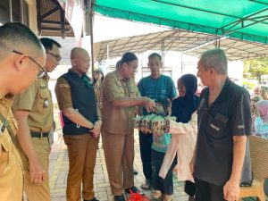
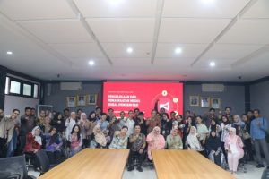

Temukan produk hukum DPRD Kota Singkawang
Peraturan daerah, monografi, artikel, dan putusan, lengkap dengan status berlaku dan berkas resminya.
Berita terbaru · 17 November 2026Hak Dasar ASN Tetap Terjaga, Penyesuaian TPP ke-13 Jadi Langkah Penataan Belanja Daerah Sesuai UU HKPD
Koleksi
Lihat semuaProduk hukum terbaru
Lihat semuaPeraturan Daerah Nomor 3 Tahun 2023tentang Pengelolaan Barang Milik Daerah
Berita terkait
Lihat semuaTopik: produk hukumperaturandewan

Hak Dasar ASN Tetap Terjaga, Penyesuaian TPP ke-13 Jadi Langkah Penataan Belanja Daerah Sesuai UU HKPD
Singkawang, MC – Pemerintah Kota (Pemkot) Singkawang mengeluarkan kebijakan penghentian pembayaran Tambahan Penghasilan Pegawai (TPP) sebesar 50 persen pada pemberian gaji ketiga belas aparatur sipil…
, dibuka di situs Media Center

Penyaluran Terakhir 2026, Dinsos Singkawang Bagikan Paket Permakanan Tahap III ke 115 PPKS
Singkawang – Pemerintah Kota (Pemkot) Singkawang melalui Dinas Sosial, Pemberdayaan Perempuan dan Perlindungan Anak (Dinsos PPPA) menyalurkan bantuan permakanan tahap III kepada 115 Penerima Pelayanan…
, dibuka di situs Media Center

Perkuat Tata Kelola Medsos Pemerintah, Diskominfo Sosialisasikan Perwali 4/2025
Singkawang, MC – Pemkot Singkawang lewat Dinas Komunikasi dan Informatika (Diskominfo) menyosialisasikan Peraturan Wali Kota (Perwali) Nomor 4 Tahun 2025 tentang Pengelolaan dan Pemanfaatan Media…
, dibuka di situs Media Center